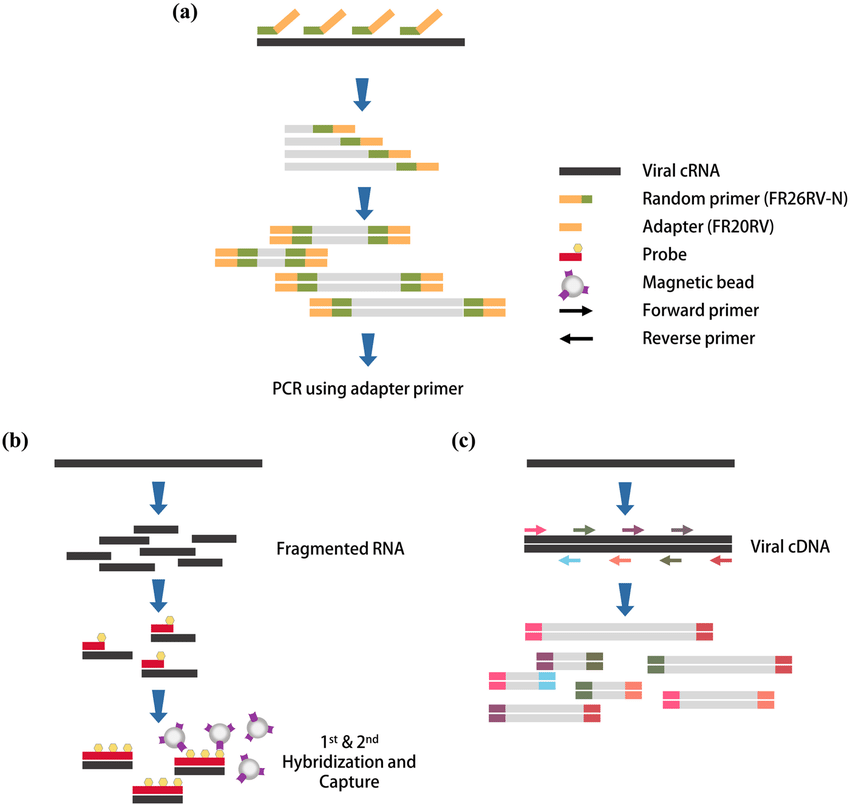

생물정보학
생물학적인 문제를 응용수학, 정보과학, 통계학, 컴퓨터 과학, 인공지능,
화학, 생화학등을 이용하여 주로 분자 수준에서 다루는 학문
생물정보학은 굉장히 많은 바이오 데이터베이스들을 다루기 위해 컴퓨터를 도입한 학문이라 생각합니다.
생물정보학을 공부하기 위해선 다양한 분야를 공부해야 합니다.
분석 결과가 통계적으로 유의한지 분석하기 위해 통계학을 알아야하고
통계 프로그램을 돌리기위해 R이나 Python과 같은 프로그래밍 언어를 알아야하며
기본적으로 생물학적인 지식이 있어야 합니다.
실제로 생물정보학 대학원들을 보면 각자의 전공이
medical science, chemistry, statistics, biology 등등 천차만별입니다.
저도 생물정보학 대학원을 가기위해 공부중이고
그 중에서 제가 주로 공부하는 것은 NGS(Next-Generation Sequencing)입니다.
NGS

기존의 직접염기서열분석법(direct sequencing)은 분석하고자 하는
부위를 PCR 증폭해야 하기 때문에 여러 타겟을 분석할 경우
많은 시간과 노력 및 비용이 소요되어 효율성이 낮은 문제점이 있었다.
이러한 단점을 극복하고자 차세대 염기서열분석(NGS)법이
개발되었으며 이것은 DNA가닥을 각각 하나씩 분석하는 방식으로
기존의 직접 염기서열분석법에 비해 매우 빠르고 저렴하게
염기서열이 가능하다는 장점을 가지고 있다.
NGS는 DNA를 일정한 조각(fragment)으로 분절화시키고
장비가 인식할 수 있는 특정 염기서열을 가진 올리고뉴클레오티드를
붙여주는 라이브러리(library) 제작,
각 라이브러리 DNA 가닥의 염기서열을 장비에서 읽는 단계,
그리고 장비에서 생성된 데이터를 가공하여
알고리즘으로 분석하는 단계로 구성된다.